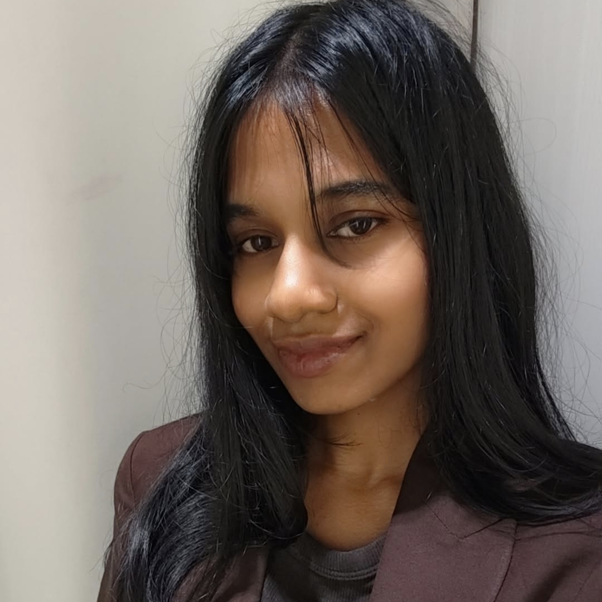

Currently pursuing an MSc in Mobile, Autonomous, and Robotic Systems at Grenoble INP - Ense3. Specialized in state estimation (EKF), multi-sensor data fusion, advanced control theory (MPC), and autonomous navigation.

I am a passionate roboticist with 4 years of industrial R&D experience in Autonomous Mobile Robots (AMRs) coupled with intensive academic training in advanced control and estimation theory. My core engineering philosophy focuses on building robust perception and navigation algorithms that enable physical systems to navigate complex, real-world environments with high precision.
Whether it is deriving mathematical models for dynamic state estimation or writing low-latency drivers to process high-frequency sensor streams, I enjoy bridging the gap between theoretical math and practical hardware.
Poitiers, France
India
Designed a robust sensor fusion estimation framework fusing dynamic virtual LiDAR scan-matching with IMU inputs. Programmed an Extended Kalman Filter adjusting sensor reliability weights dynamically to prevent error drift.
Designed a Model Predictive Controller (MPC) utilizing state estimation outputs to generate smooth, optimal wheel torque control actions under kinematic constraints and friction saturation models.
Developed a computer vision application using OpenCV to trace bounding boxes, monitor regions of interest, and count traffic flow over signal markers in real-time with ultra-low latency constraints.
Configured, calibrated, and deployed physical sensor arrays including 2D LiDAR units and depth cameras on an industrial robotic platform to achieve safe obstacle detection and reliable local mapping.
Languages
C++, Python, MATLAB, LaTeX
Robotics & Control
ROS / ROS2 Humble, EKF, MPC, Simulink
Perception
LiDAR Processing, OpenCV, Camera Fusion
Sectors
AMR, Industrial R&D, Autonomous Systems